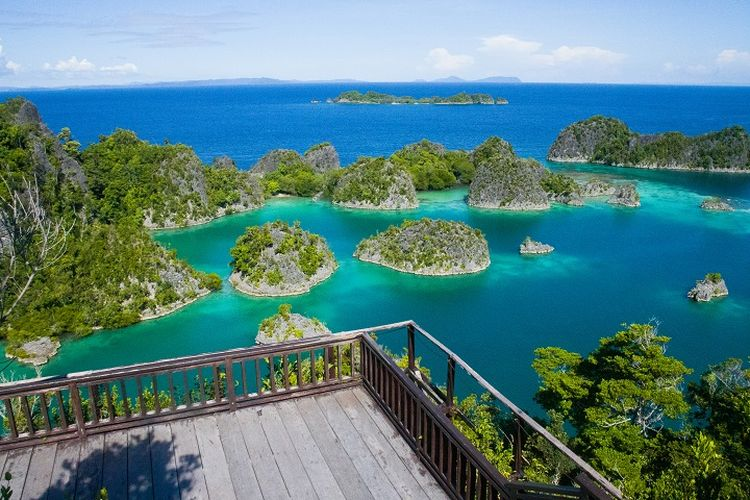

Papua
Raja Ampat dikenali dengan keindahan laut dan pemandangannya. Pulau ini diakui sebagai rumah bagi keanekaragaman hayati terumbu karang terbesar di dunia. Dengan lebih dari 550 varietas karang yang berbeda, 700 jenis moluska, dan 1.427 spesies ikan yang berbeda, wilayah ini merupakan pusat keanekaragaman hayati laut yang signifikan. Tujuh puluh lima persen dari seluruh spesies karang yang diketahui dapat ditemukan di perairan sekitar Kepulauan Raja Ampat, yang merupakan rumah bagi beberapa spesies paling beragam di dunia
Read More
👀827 views
ğŸ’8 comments
Riau

Bintan merupakan destinasi andalan di Kepulauan Riau. Destinasi ini terkenal akan deretan resor mewahnya, lapangan golf kelas dunia, dan tak ketinggalan, keindahan pesisir pantainya yang menakjubkan. Nah, bagi Sobat Pesona yang ingin merasakan sensasi petualangan sekaligus hiburan, Bintan adalah opsi yang tepat untuk mendapatkan liburan yang menyenangkan dan mengesankan.
Read More
👀827 views
ğŸ’8 comments
Jakarta

Kebanyakan orang akan berpendapat kalau Jakarta lebih identik dengan gedung-gedung tinggi serta pusat perbelanjaan barang mewah. Padahal, Jakarta juga menawarkan beragam wisata yang menarik untuk dikunjungi.
Read More
👀827 views
ğŸ’8 comments